A beginner friendly tour of presidential orders, from 1791 to 2026, with the dataset itself as the main deliverable. An executive order is a signed instruction from the President to the federal government. It has the force of law until a later President, Congress, or a court changes it.
Chapter 1, coverage. Orders were not numbered neatly from the start. Orders before 1862 are unnumbered, numbering was applied back to 1862, and a uniform system only settled in the early 1900s, with Federal Register publication from 1936.
Chapter 2, the dataset. One row per order in the dataset, with president, party, term, era, date, title, category, disposition notes, source, and text availability. The full file is data/processed/executive_orders.csv in the project folder.
Chapter 3, counts. The 1930s dominate because Roosevelt and Hoover issued thousands of short administrative orders. Modern Presidents sign far fewer, roughly 150 to 400 per term.
Chapter 4, topics. Keyword rules are transparent but blunt. Topic modeling finds piles of titles that share words, like land withdrawals, civil service rules, and retirement exemptions. Both methods work from titles, not full orders.
Chapter 5, history. Order volume rises in crises and first years: the New Deal, World War II, the civil rights era, post-9/11, the pandemic, and the start of the Trump second term. Timing is not proof of cause.
Chapter 6, language. Early titles talk about land and withdrawals. Later titles talk about federal, national, and security. Title length stays modest, while full texts vary from a few hundred words to many thousands.
Chapter 7, search. The project includes a working word based search, using TF-IDF and cosine similarity. No language model was trained or used here. The notebook explains how embeddings, a vector store, and retrieval augmented generation would extend this search in the future.
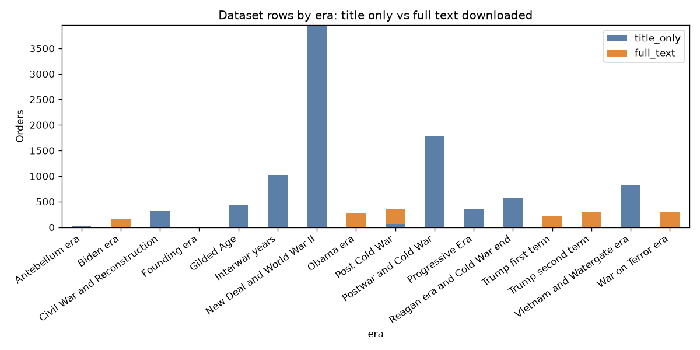
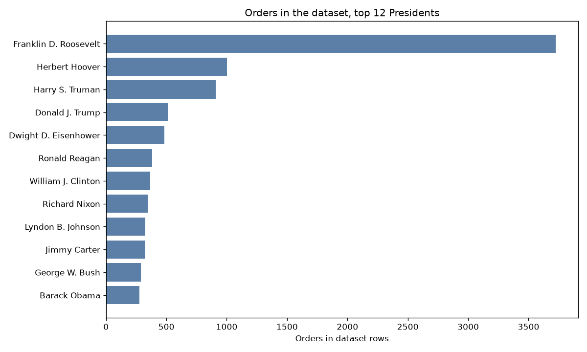
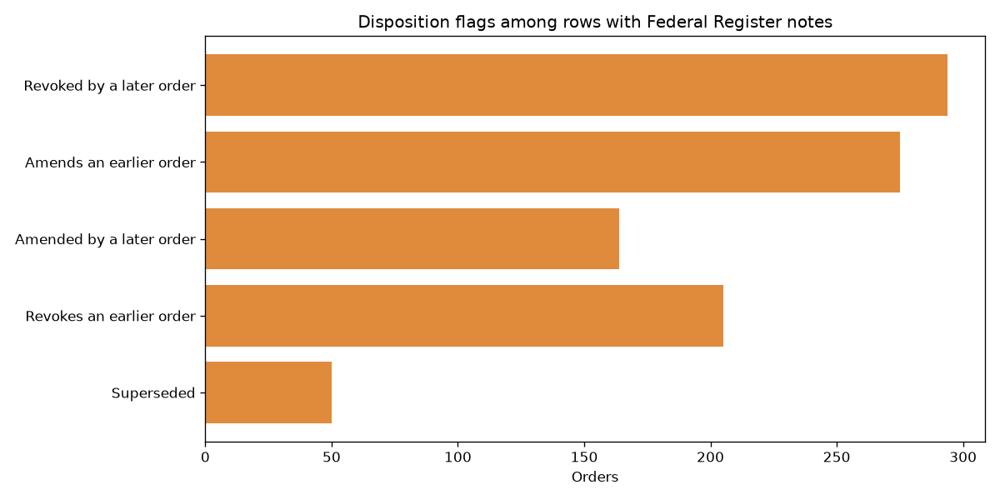
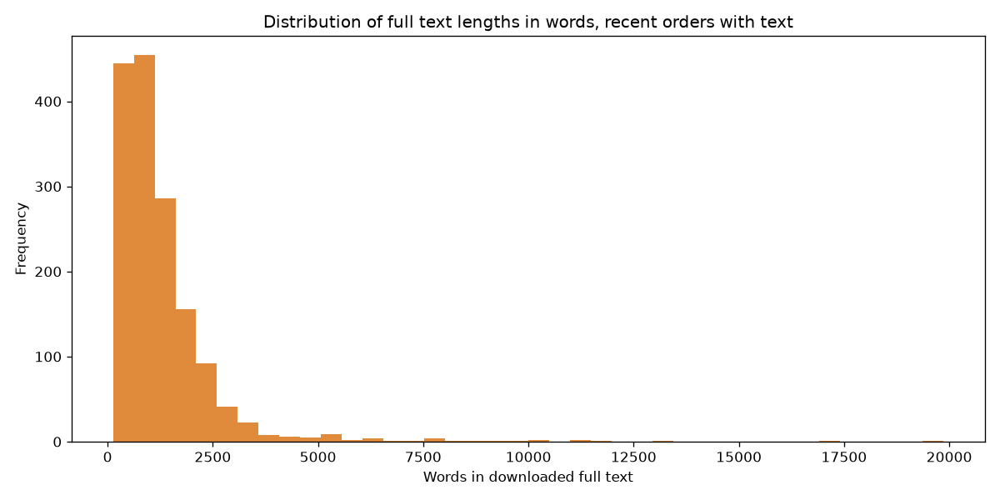
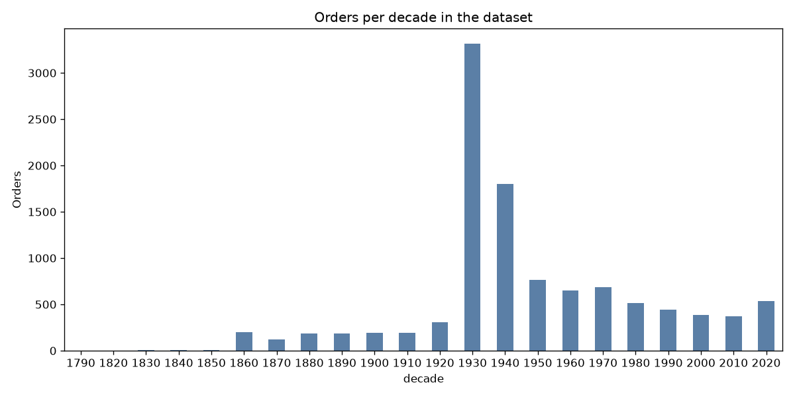
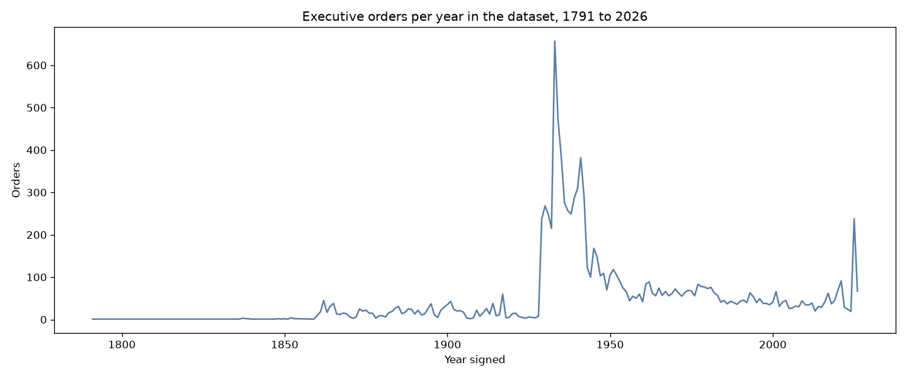
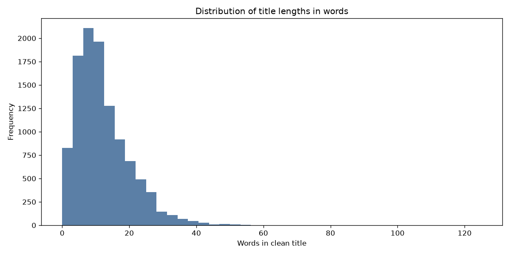
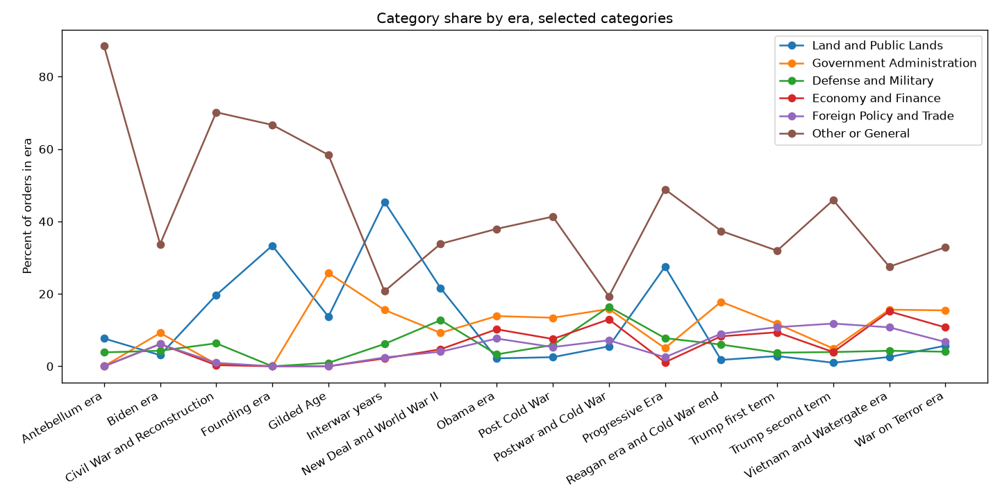
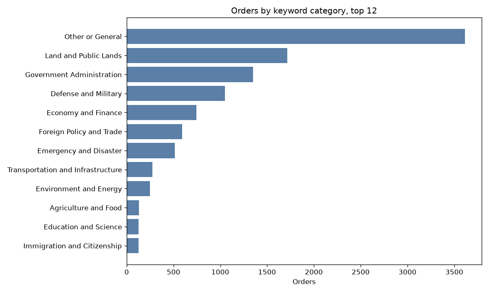
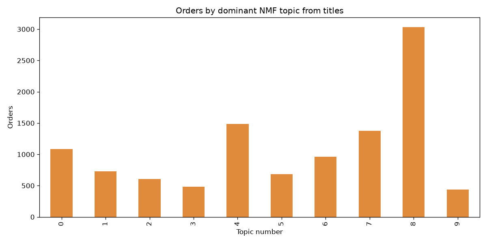
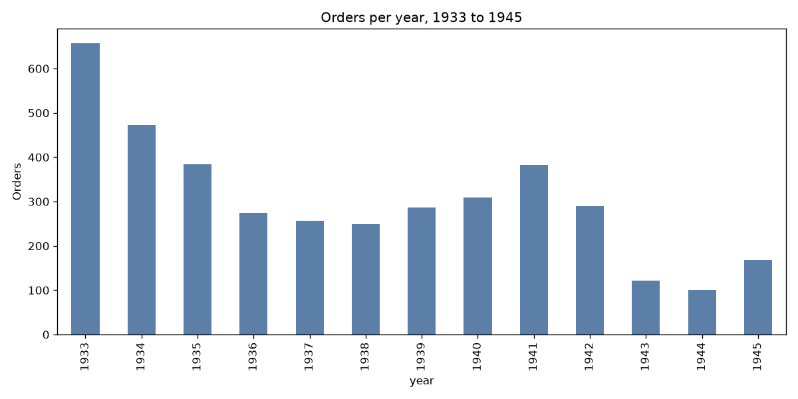
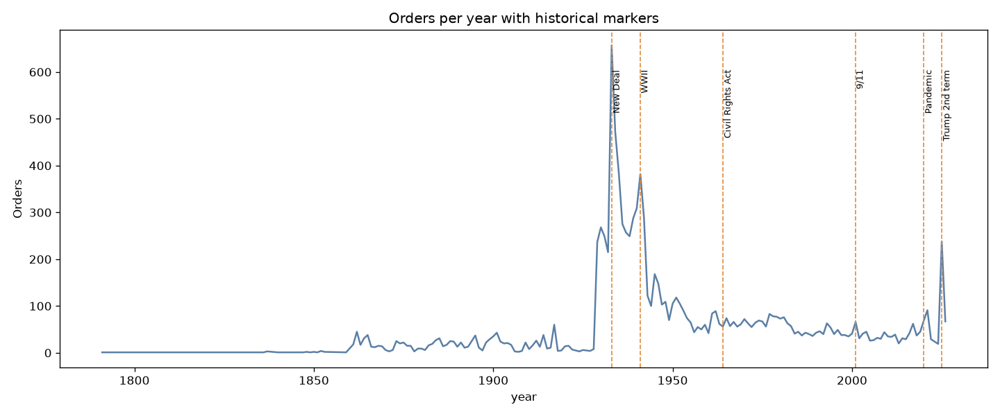
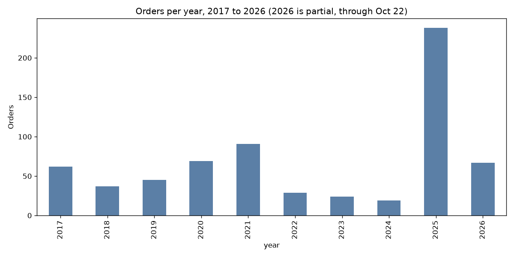
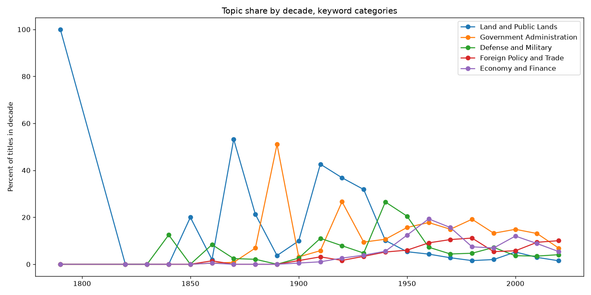
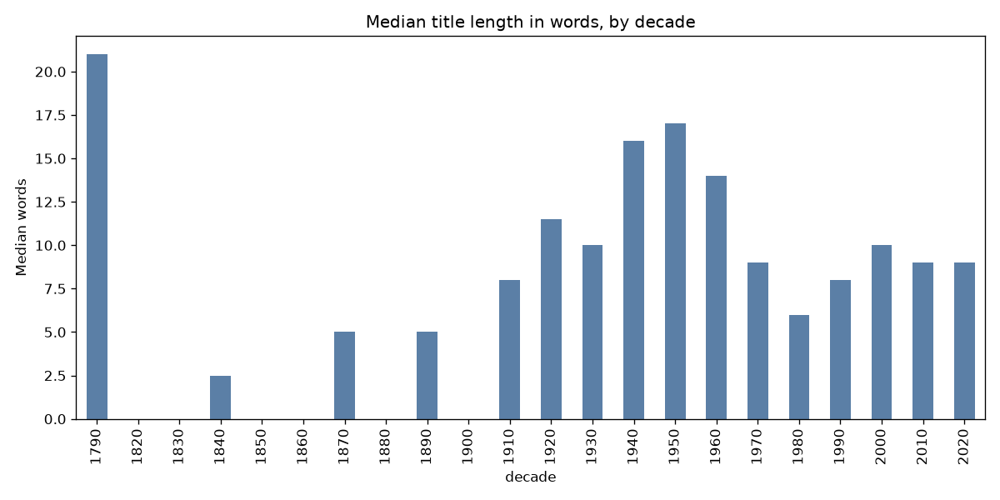
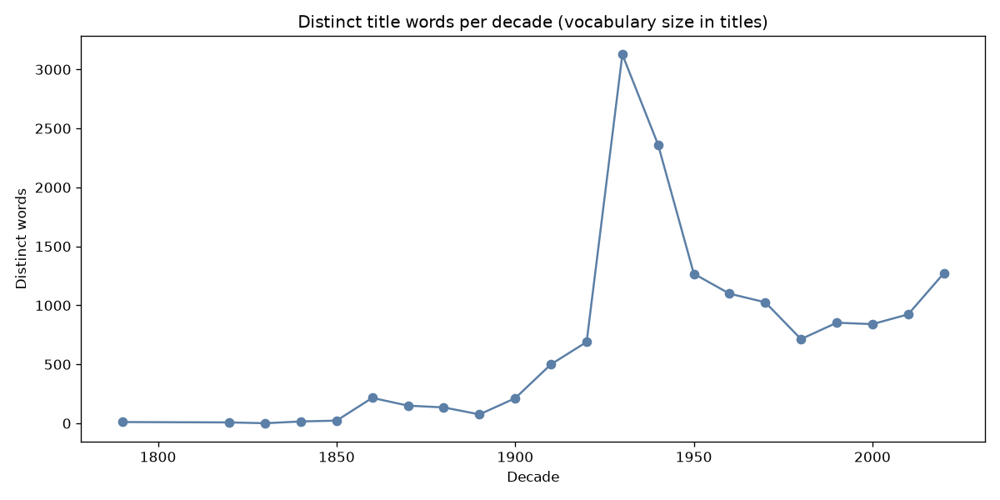
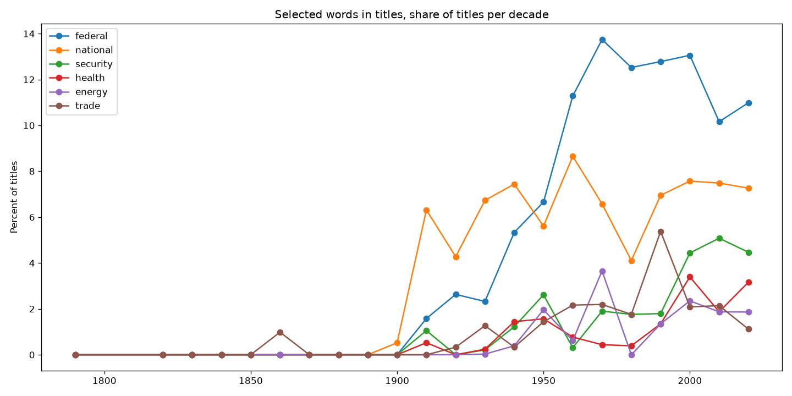
Repo link placeholder: to be added by the publisher after verification. This build was local only, nothing was published, pushed, posted, or signed into.